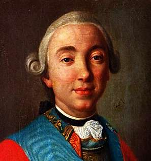

Борис Акунин
Мой календарь
В этот день нужно хорошенько подумать: нет ли вокруг нас людей, к которым окружающие (в том числе и мы) относимся несправедливо. Плохая репутация иногда бывает незаслуженной, и это худшая несправедливость на свете.
Например, 6 марта 1762 года был опубликован один из самых светлых актов российской истории: об упразднении Тайной канцелярии, которая много лет запугивала людей и плодила доносчиков.
При чем тут незаслуженно плохая репутация? А при том, что этот прекрасный манифест подписал самый презираемый царь всей российской истории - Петр III. Про него в исторических исследованиях и романах пишут не иначе как с брезгливостью. Он-де и ребячливый, и никчемный, и жалкий, и шут гороховый, и ни в какое сравнение не идет со своей блистательной женой, великой Екатериной.
А начнешь изучать факты - диву даешься. Петр правил всего полгода, но за это время успел сделать очень многое - и всё дельное.
Закончил идиотскую войну, в которой Россия непонятно зачем участвовала.
Впервые предоставил одному из сословий тотально несвободной страны право выбора - служить государству или не служить. С этого момента в России, собственно, и зародилась тяга к свободе.
Прекратил преследования старообрядцев.
Создал Государственный банк, начал выпуск бумажных денег, ввел свободу торговли.
А главное, как уже сказано, упразднил хватательно-доносительное ведомство.
Ребячлив - да, был. И доверчив. Чем и воспользовалась Екатерина, которая своего мужа сначала убила, а потом еще и посмертно оболгала перед потомством.
Оценивайте людей не по тому, что о них пишут или говорят, а по их поступкам. Хотя бы сегодня.